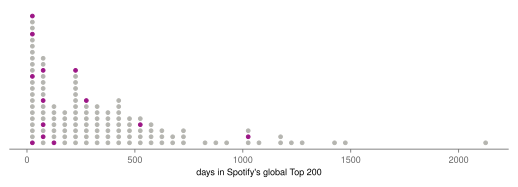
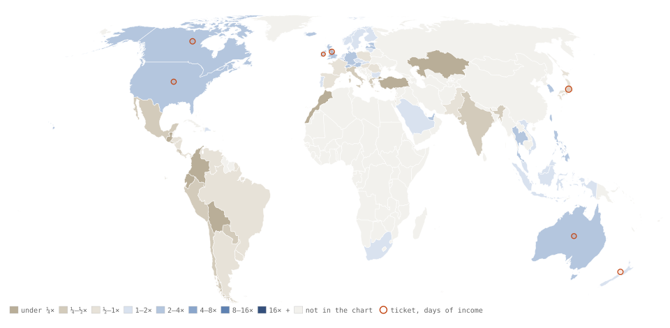
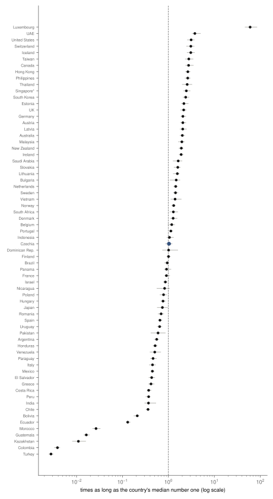
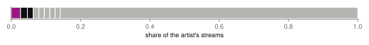
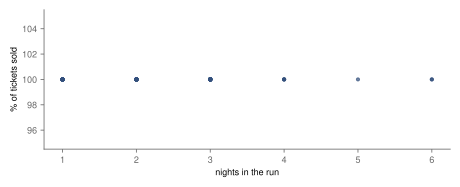
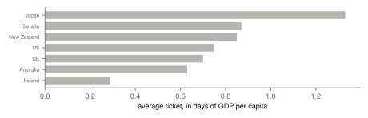
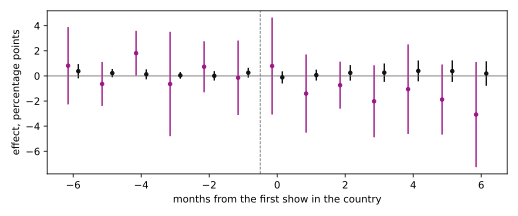

Research · Pop, measured, part 2 · Taylor Swift, 2017–2026
Did hotel prices rise where the Eras Tour played?
Whether hotel prices rose differently where and when the Eras Tour played in Europe could not be told (0.79 points, inconclusive), and the rest is description.
- tour entries reporting as many tickets as were available
- 100 % administrative count · 84 entries, 194 shows · Boxscore for 2018, capacity-reported for the Eras Tour
- songs peaking at 2 that lasted longer than Cruel Summer
- 8.9 % 95 % CI 4.0 % to 14.5 % · 128 songs
- Eras Tour show month: accommodation inflation, hosts against comparison countries (primary)
- 0.79 pp 95 % uniform band −3.02 to 4.59 · inconclusive
- Eras Tour show month: restaurant inflation, hosts against comparison countries
- −0.12 pp 95 % uniform band −0.54 to 0.31 · not supported
Overwhelmed? Here's the short version
- Her biggest song never reached number one globally, yet it outlasted almost every song that peaked where it did; it returned to the chart years after its release, and the data do not say how much of its run that return supplied.
- No song holds more than a few percent of her streams, but across her 500-song page the streams are as unequal as for any artist in the series (Gini 0.64).
- Every entry of her two stadium tours reports a full house: Boxscore's tickets sold for 2018, capacity and press figures for the Eras Tour, so the data cannot say how much more she could have sold. Her 2018 tickets cost under a day and a half of GDP per head in every country she played; the Eras Tour has no gross in the source.
- Where the Eras Tour played in Europe in 2024, restaurant and overall inflation in the show month stayed within about two thirds of a point of the comparison countries' at the 95 % uniform band; whether hotel-price inflation differed, the main question, cannot be told, and it already differed four months before the shows.
- These are differences against countries the tour had not yet reached or never played, from Eurostat's national monthly indices; they are the tour's effect only if those countries' prices would have moved alike, and city-level or weekly hotel prices could show what these cannot.
Photo: Redd Angelo · CC0, toned
In 2024 the Eras Tour spent from May to August in Europe's stadiums, from Lisbon and Madrid to Warsaw. When it came to a country, did the price of a hotel night or a meal out move differently from prices in countries it had not reached? That question has a difference-in-differences design of its own, registered separately, and its result, which is inconclusive, closes this page.
The page is the second part of Pop, measured, which asks five questions of five artists. How long did the artist's biggest song last against comparable hits, and where did it last longest? Is the listening one song or many? Did longer runs in one venue sell less of their tickets? And what did a ticket cost in days of local income?
The questions draw on work on the life of chart songs5, on the shift of musicians' income to live shows6, on concert pricing7 and on streaming's effect on music sales8. Taylor Swift's part adds the price question as a sixth.
Data
The chart data are the series' common collection, made once on 1 October 2026. It covers the global chart and 75 national Spotify charts: every song that has entered the Top 200, with its days, peak and total streams, and the artist's page with every song's streams1.
By the series rule, the focal song is her song with the most global streams, Cruel Summer, released in 2019. Its highest global position was number two. So its reference set, the songs it is measured against, is not the number ones. It is the 128 songs that also peaked at two and whose kworb track page has no date before 8 January 2017.
That track page can be incomplete. For Cruel Summer its earliest date is 31 August 2023, four years after its 2019 release. So the test that keeps a song in the set checks the earliest date kworb shows, not when the song first charted.
The artist page lists 500 songs. She has more than that, counting re-recorded versions, so the page may stop short of her whole catalogue. That would slightly overstate the shares of her largest songs.
For the tours, the Wikipedia article on the Reputation Stadium Tour (2018) lists Billboard's Boxscore figures, the trade reports of tickets sold, tickets available and gross for each run of shows2. It has 36 entries covering 53 shows.
The article on The Eras Tour (2023–2024) has an attendance column of another kind. It gives one figure per run, written as sold / available with the two numbers equal, taken from venue, press and capacity reports, and no gross. The article footnotes ten of its figures as rough estimates. In all it has 48 entries covering 141 shows.
One of them, Wembley Stadium's 753 112 for eight nights in June and August 2024, is printed in two cells. The first published version counted it as two entries, and it is now one. Together that is 84 entries and 194 shows.
The ticket-price question rests on the 2018 tour alone. Income is the World Bank's GDP per capita in current dollars3.
The price study uses Eurostat's monthly harmonised consumer price indices, built the same way in every country so that they can be compared. They cover 30 European countries, 29 of them in the estimation and Austria reported separately4, and are described in the study's own section.
How this was done
The chart and tour methods are those of the series, fixed on 1 October 2026, before the results were computed (see the registration row).
How long a song lasted is its total days in the global Top 200. Songs still in the chart are treated as unfinished by the Kaplan–Meier estimator9, a standard way of counting lifetimes that have not ended yet.
A song's place is the share of songs in its reference set estimated to last longer. It comes with a 95 % bootstrap interval, the range the data leave plausible, from re-drawing the reference set 2 000 times.
For countries, the focal song's days in each national chart are divided by the median days of that country's own number ones.
Runs are compared with the share of tickets sold. A rule set in advance says that if nine entries in ten sold out, the data show demand at or above capacity and nothing more.
Ticket prices are gross divided by tickets sold, then divided by a day of the host country's GDP per capita. These results are descriptive. The price study's method is set out with its results.
How long Cruel Summer lasted
Cruel Summer lasted longer than almost every song that peaked where it did. It spent 1 026 days in the global Top 200, more than any other song in its reference set but a handful.
Only 8.9 % of songs that also peaked at number two are estimated to have lasted longer (95 % CI 4.0 % to 14.5 %). The median such song lasted 258 days.
It came out on an album in 2019, and the earliest date kworb lists for it is 31 August 2023. The collected data do not say when or why it returned, or how its days split between a first run and a second. The measure counts days in the chart, not days in a row, so a return adds to it.
Her other songs that peaked at two behaved more like their peers. Lover lasted 518 days. Most of the rest, album tracks and re-recordings that entered high for one release week, were gone within months.
The rest of the reference set is a reminder of how a big release week shows up. Re-recorded songs from her "Taylor's Version" albums and tracks from new albums entered the global chart near the top on the strength of release day, then left within a few weeks. Back To December (Taylor's Version) lasted 21 days, and The Tortured Poets Department 42.
A peak of two says how many people played a song in its first days. How long it stays says whether they went on playing it. For Cruel Summer, they did, more than for almost any comparable song.
The series design also places every other song of the artist that reached number one globally, and the first published version of this part did not. They were placed after publication (9 October 2026, post hoc), among the 164 number ones of part 1's reference set, by the same method.
Her 14 number ones since 2017 run from a few days to a year and a half. The four that lasted longest are cardigan, 556 days (33.3 % lasted longer, 95 % CI 25.9 % to 40.8 %); Anti-Hero, 548 days (36.2 % lasted longer, 95 % CI 28.8 % to 43.8 %); The Fate of Ophelia, 363 days (52.4 % lasted longer, 95 % CI 44.1 % to 60.5 %, still charting); Fortnight, 235 days (64.6 % lasted longer, 95 % CI 56.8 % to 71.8 %). The other ten lasted 167 days or fewer.

Where it lasted
Cruel Summer entered 68 national charts and outlasted the local median number one in 37 of them.
Luxembourg tops the registered ranking, by days against the local median number one, at 60×. Its number ones last a median of 7 days, so any long run looks huge there.
After it, the song stood out most in the United Arab Emirates (3.8×) and the United States (3.1×). Switzerland (3.1×), Iceland (3.1×), Taiwan (2.8×) and Canada (2.8×) come next.
Its home market and the English-speaking world kept it long: 902 days in the United States and 891 in the United Kingdom.
Ranked by days alone, a ranking added to the series after part 1's results were seen, its longest runs were in Singapore, 1 517 days and still in the chart, and in the Philippines (1 369), the United Arab Emirates (1 244) and Hong Kong (1 236).
Czechia sits almost exactly in the world's middle, as it did for Harry Styles in part 1. The song spent 444 days in the Czech chart, against 431 for the median Czech number one.
That is 1.0 times as long (95 % CI 0.9–1.2), 35th of 68 countries.
Slovakia kept it 1.6 times as long as its median number one, and Poland 0.8 times. In Mexico (0.4×) and Japan (0.7×) it lasted less than local number ones. In Colombia and Turkey it barely entered the chart at all, for a day or two.

Cruel Summer outlasted the local median number one in 37 of 68 countries; in Czechia it ran level, 1.0×.

One song or a catalogue
No single song dominates her streams. Of the 500 songs on her Spotify page, the largest, Cruel Summer, holds 3 % of their streams.
Blank Space and I Don’t Wanna Live Forever (Fifty Shades Darker), a duet from a film soundtrack, follow, and the top three together hold 6 %. Only 13 songs hold one percent or more each.
The registered summary of concentration is the Gini coefficient. It would be 0 if every song had the same streams and 1 if one song had them all.
Hers is 0.64, and with BTS (0.64) it is the highest of the series. Harry Styles has 0.56, Bad Bunny 0.54 and Billie Eilish 0.52. Her top song's share is not the smallest either: Bad Bunny's is 2 %.
So no single hit dominates, but across the whole page the streams are unequal. That is in part because a 500-song page includes many rarely played tracks.
By a count that is not one of the registered measures, half of all her streams come from 57 songs, the largest number in the series. For the others the count is six (Harry Styles), 41 (BTS), 46 (Bad Bunny) and 14 (Billie Eilish).
That count grows with the size of the page, which lists 500 songs for her against 49 to 319 for the others. Re-recorded versions also count as separate songs. So it is not evidence that her listening is more spread.
No single song dominates: Cruel Summer, her biggest, holds 3 % of the streams on a 500-song page.

How many nights a city can fill
Her two tours with figures, Reputation Stadium Tour and The Eras Tour, played 194 shows in 84 entries, all in stadiums. Every entry reports as many tickets sold as available, but the two tours' figures are of different kinds.
The 36 Reputation Stadium Tour entries are Boxscore's tickets sold and available. The 48 Eras Tour entries are capacity and press figures, in which the two numbers are equal by construction. So for the Eras Tour the 100 % is capacity-reported, not a measured share sold.
The longest run was 8 nights, at Wembley Stadium in London, in two visits in June and August 2024 that the source reports as one figure.
Because the share sold is the same everywhere, its correlation with the length of the run is undefined. There is nothing for it to measure. By the rule set in advance, the data show demand at or above capacity everywhere and cannot say how far above.
The median Reputation Stadium Tour entry, of the 36 with a gross, took 6.67 million dollars a night. The Eras Tour has no gross in the source.
Every one of her 84 entries reports as many tickets as were available: Boxscore for 2018, capacity figures for the Eras Tour.

What a ticket cost, in days of income
With gross figures only for the Reputation Stadium Tour, the price question covers 7 countries in 2018.
The average ticket cost 1.3 days of the local GDP per capita in Japan (148 dollars), and less than a day everywhere else. It was 0.9 in Canada and 0.7 in the United States (129 dollars). The lowest was Ireland, at 0.29 days (64 dollars).
The average across the tour was 120 dollars a ticket.
All the countries were rich, and none was in Latin America or South-East Asia, where the other parts of the series found tickets costing several days of income. That is a fact about where this tour went, not about her pricing.
The Eras Tour, which did play Latin America and South-East Asia, would be the test, and its gross is not in the source.

Prices in the countries the Eras Tour played
This part asks whether consumer prices differed in the European countries the Eras Tour played, in the months of its shows, with a pre-specified design. The registered main question is accommodation in the month of the first show. The plan records that the author expected those prices to rise.
The tour's first European show in each country fell in a different month. It was May 2024 in France, Sweden, Portugal and Spain, June in Ireland, July in the Netherlands, Switzerland, Italy and Germany, and August in Poland.
That staggering lets the 10 host countries be compared, month by month, with the countries the tour had not yet reached and the ones it never played. The comparison is a difference-in-differences: the change in host countries minus the change in the others over the same months. It uses Callaway and Sant'Anna's estimator for staggered timing10.
Time is counted from each country's first show. Month 0 is the show month, and month −4 is four months before.
The outcome is year-on-year inflation in Eurostat's harmonised price index4, in 29 countries. It is measured for accommodation services, for restaurants and cafés, and for the whole basket.
The United Kingdom has no harmonised index after 2020, so its 15 shows are outside the study. Austria, whose three Vienna shows were cancelled the day before the first, is reported separately.
A difference measured this way is the tour's effect only under three assumptions. The first is parallel trends: host countries' inflation would otherwise have moved like the comparison countries'. The second is no anticipation: prices did not move ahead of the shows, as they would if hotels repriced months in advance. The third is no spillover: the tour did not move prices in the comparison countries too, through fans who travelled across borders.
The registered check of the first assumption asks for bands for months −6 to −2 that include zero. It passes for restaurants and for the whole basket, and fails for accommodation, at month −4. The other two assumptions cannot be checked with these data.
The intervals below are the registered 95 % uniform bands, the range the data leave plausible for all thirteen months at once. Pointwise 95 % intervals for single months, added after publication, are narrower.
For a meal out and for prices overall, the uniform bands in the show month stay within about two thirds of a point of the comparison countries'.
In the month of the first show, year-on-year inflation in restaurants and cafés in the host countries differed from the comparison countries' by −0.12 percentage points. The 95 % uniform band runs from −0.54 to 0.31, and the pointwise 95 % CI, post hoc, from −0.47 to 0.24.
The permutation p is 0.54. It is the share of 2 000 random reassignments of the show months to countries that gave a difference at least this large.
In the whole basket the difference was 0.23 points (uniform band −0.21 to 0.67, pointwise, post hoc, −0.12 to 0.58, p = 0.17).
Both uniform bands lie within one percentage point of zero, so by the rule fixed in advance both are not supported. Differences above 0.31 points for restaurants and 0.67 points for the whole basket lie outside the 95 % uniform bands. Smaller ones do not, and a few tenths of a point on a national index would not be small.
For accommodation, the main question, these data cannot tell whether prices differed. The difference is 0.79 points, with a uniform band from −3.02 to 4.59. The pointwise 95 % CI is −2.40 to 3.97, and p = 0.56. The label is inconclusive.
The author's expectation of a rise is neither confirmed nor refuted: the interval allows a sizeable fall or a sizeable rise. National hotel prices move several points from month to month. A few nights of shows in one or two cities are a small part of a country's hotel nights in a month.
Four months before the shows the accommodation band already excludes zero. So the pre-trend check, the test that host and comparison countries moved alike before the shows, fails, and the label could not have been stronger. With the post-hoc pointwise intervals, month −4 excludes zero for the whole basket as well (0.03 to 0.97).
In the months after the show the accommodation differences are negative: −1.41 and −0.74 points in months +1 and +2 (uniform bands −4.46 to 1.65 and −2.55 to 1.08). They are negative in 6 of the 6 months through month +6, all with uniform and pointwise intervals that include zero.
Hotel inflation in the show month: 0.79 points against comparison countries, uniform band −3.02 to 4.59, inconclusive; the restaurant band ends at 0.31.

Comparing with never-visited countries only gives 0.91 points for accommodation. Leaving out each host country in turn keeps the accommodation estimate between −0.39 and 1.55.
A placebo that puts every show twelve months earlier, in 2023, gives 0.32 (−2.28 to 2.92).
Austria's accommodation inflation in August 2024, the month of the cancelled shows, was 5.4 %. That is higher than in 63 % of the comparison countries.
Other events share the window and are not adjusted for. Germany's show month coincided with the European football championship, which it hosted, and without Germany the accommodation estimate is 0.92. France's months +2 and +3, July and August 2024, fell in the Paris Olympic Games. France also had a second run of shows in its month +1, at Décines-Charpieu near Lyon on 2–3 June.
The three outcomes are tested with no correction for multiplicity, the higher chance of a false alarm when several things are tested at once.
What the study cannot see is what happened in Lisbon, Madrid or Warsaw on the weekend of the shows. A city's hotels can be full and dear for three nights without moving a national monthly index.
What this means
Put plainly, whether national hotel prices moved differently where the Eras Tour played could not be told from these data (inconclusive), and the registered checks for meals out and the whole basket were not supported.
What was measured: Taylor Swift's biggest song never topped the global chart and still outlasted all but 8.9 % of the songs that peaked where it did. A return to the chart four years after its release is counted in its run.
No single song dominates her streams, but across her 500-song page they are as unequal as for any artist in the series (Gini 0.64).
Every entry of her two stadium tours reports a full house, from Boxscore for 2018 and from capacity and press figures for the Eras Tour. So the limit of her demand is not in these data.
For the Eras Tour in Europe in 2024, the show-month difference in national hotel-price inflation, the main question, is inconclusive, and the months before the shows already differ. For restaurants and the whole basket, differences above about a third and two thirds of a point lie outside the uniform bands.
All of these are differences against countries the tour had not yet reached or never played. Reading them as the tour's effect needs parallel trends, no anticipation and no spillover, and the first fails its check for hotels.
What this does not show
Spotify is one service among several. Days in the chart are not days in a row, and her focal song's revival is counted as part of its run. The artist page may not list her whole catalogue.
A sold-out show hides how many more wanted tickets. The Eras Tour's attendance figures are capacity and press reports, not tickets sold, and its gross is not in the source, so its prices are not measured here.
The price study is national and monthly. It cannot see a city's prices over a weekend, prices that tourists paid as distinct from residents, or prices in the United Kingdom.
It covers one tour in one summer, alongside a football championship in one host country and the Olympic Games in another, with no correction for testing three outcomes. And it assumes that comparison countries were untouched by fans travelling across borders.
GDP per capita is a rough stand-in for what fans earn.
Reproduction
Every number on this page is filled in from assets/pop/taylor-swift/results.json and eras-results.json by a script. From the repository root: tools/pop/collect.py and collect_extra.py collect the chart and tour files, and tools/eras/collect.py the price indices. Then parse.py, analyse.py and tools/eras/estimate.py make the estimates, and figures.py, tools/eras/figures.py and article.py taylor-swift build the figures and this page. The designs are pop-measured-design.md and eras-inflation-design.md.
References
- kworb.net (2026). Spotify charts: daily totals for the global and national charts, current daily charts, track pages and artist song lists. kworb.net/spotify. Accessed 1 October 2026.
- Wikipedia contributors (2026). Reputation Stadium Tour, revision 1376322065; The Eras Tour, revision 1376835990; Boxscore figures as cited there. en.wikipedia.org. Accessed 1 October 2026.
- World Bank (2026). GDP per capita, current US$ (NY.GDP.PCAP.CD), 2016–2025. data.worldbank.org. Accessed 1 October 2026.
- Eurostat (2026). HICP, monthly data (index, 2015 = 100),
prc_hicp_midx: CP112 accommodation services, CP111 restaurants and cafés, CP00 all items, January 2022 to December 2025. ec.europa.eu/eurostat. Accessed 2 October 2026. - Bradlow, E. T., Fader, P. S. (2001). A Bayesian lifetime model for the "Hot 100" Billboard songs. Journal of the American Statistical Association 96(454), 368–381. doi:10.1198/016214501753168091. Accessed 2 October 2026.
- Connolly, M., Krueger, A. B. (2006). Rockonomics: the economics of popular music. In Handbook of the Economics of Art and Culture, vol. 1, 667–719. Elsevier. doi:10.1016/S1574-0676(06)01020-9. Accessed 2 October 2026.
- Courty, P., Pagliero, M. (2014). The pricing of art and the art of pricing: pricing styles in the concert industry. In Handbook of the Economics of Art and Culture, vol. 2, 299–356. Elsevier. doi:10.1016/B978-0-444-53776-8.00013-1. Accessed 2 October 2026.
- Aguiar, L., Waldfogel, J. (2018). As streaming reaches flood stage, does it stimulate or depress music sales? International Journal of Industrial Organization 57, 278–307. doi:10.1016/j.ijindorg.2017.06.004. Accessed 2 October 2026.
- Kaplan, E. L., Meier, P. (1958). Nonparametric estimation from incomplete observations. Journal of the American Statistical Association 53(282), 457–481. doi:10.1080/01621459.1958.10501452. Accessed 2 October 2026.
- Callaway, B., Sant'Anna, P. H. C. (2021). Difference-in-differences with multiple time periods. Journal of Econometrics 225(2), 200–230. doi:10.1016/j.jeconom.2020.12.001. Software: csdid for Python. Accessed 2 October 2026.